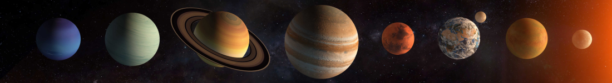

LOS PLANETAS
¿QUE SON LOS PLANETAS
Un planeta es un cuerpo celeste que gira alrededor de una estrella, y que tiene suficiente masa para alcanzar un equilibrio hidrostático (entre la fuerza de gravedad y la energía que genera su núcleo). Este equilibrio le permite que mantenga su forma de esfera, que domine órbita (impide que otros cuerpos invadan su recorrido) y que no emita luz propia, sino que refleje la luz de la estrella alrededor de la que gravita.
Mercurio
Es el planeta más pequeño del sistema solar, tiene un cuerpo rocoso similar al de la Tierra y su núcleo ocupa casi la mitad del planeta. No tiene satélites naturales.
Venus
Es el tercer planeta en cuanto a tamaño (de menor a mayor), tiene un diámetro de tamaño similar al de la Tierra y no posee satélites naturales.